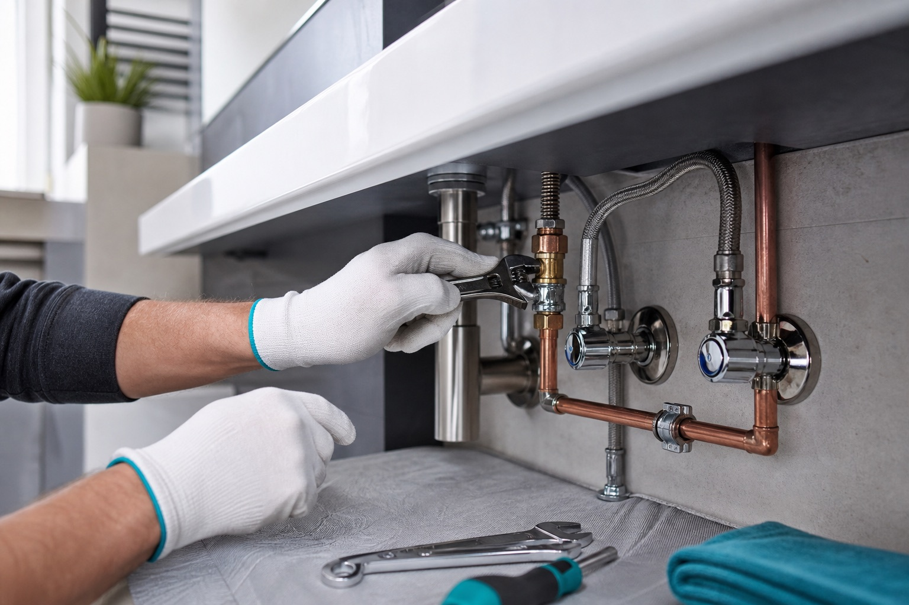

Badsanierung
Modernisierung vom kompakten Gäste-WC bis zum hochwertigen Komfortbad mit bodengleicher Dusche.

Gerlach Claus Sanitär steht für saubere Installation, ruhige Planung und präzise Ausführung im Bad und an allen wasserführenden Systemen.
Für Häuser, Wohnungen und Gewerbe
Gute Sanitärarbeit beginnt nicht mit dem Werkzeug, sondern mit einem genauen Blick auf Bestand, Nutzung, Budget und Zukunft. Diese Website ist als neue Premium-Präsenz aufgebaut und sollte noch mit echten Projekten, Telefonnummer, Adresse und Kundenstimmen ergänzt werden.
Leistungen
Modernisierung vom kompakten Gäste-WC bis zum hochwertigen Komfortbad mit bodengleicher Dusche.
Leitungen, Armaturen, Anschlüsse und Objektmontage sauber geplant und fachgerecht umgesetzt.
Schnelle Hilfe bei tropfenden Armaturen, defekten Spülkästen, Undichtigkeiten und verschlissenen Teilen.
Prüfung, Austausch und Pflege bestehender Sanitärtechnik, damit kleine Mängel nicht teuer werden.

Qualität
Besucher brauchen Vertrauen, bevor sie anrufen. Deshalb setzt die neue Website auf klare Zusagen, transparente Abläufe und eine ruhige, hochwertige Bildsprache statt austauschbarer Handwerker-Floskeln.
Ablauf
Problem, Wunsch und Adresse kurz beschreiben. Fotos helfen bei einer ersten Einschätzung.
Vor Ort werden Bestand, Anschlüsse, Maße und mögliche Risiken sauber geprüft.
Die empfohlene Lösung wird verständlich erklärt, inklusive Material und Zeitfenster.
Fachgerechte Ausführung, ordentliche Baustelle und ein Ergebnis, das im Alltag trägt.
Mehr Vertrauen
Vorher-Nachher-Bilder echter Bäder in Mainz mit kurzer Beschreibung des Umfangs.
Kurze Bewertungen mit Stadtteil, Projektart und Erlaubnis zur Veröffentlichung.
Klare Angabe, ob und wann ein Notdienst oder kurzfristige Reparaturtermine möglich sind.
FAQ
Mainz und das nähere Umland. Exakte Einsatzgebiete sollten mit den echten Betriebsdaten ergänzt werden.
Ja. Fotos von Armatur, Anschluss, Schadenstelle oder Badbestand beschleunigen die Einschätzung deutlich.
Die Seite ist dafür vorbereitet. Falls Partnergewerke koordiniert werden, sollte das konkret benannt werden.
Kontakt
Für die Veröffentlichung bitte echte Telefonnummer, E-Mail-Adresse und Anschrift einsetzen. Bis dahin führt dieser Bereich Besucher eindeutig zur Kontaktaufnahme, ohne falsche Daten vorzutäuschen.